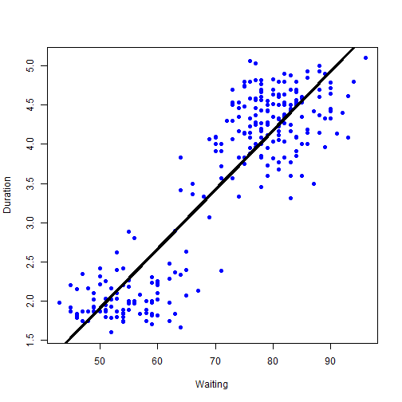

Have you ever found yourself waiting at Old Faithful, trying to figure out for how long it was going to erupt?
The wait is over! Alex's new Super Duper Shiny App uses loads of data on Old Faithful to predict how long the next eruption will be.
Alex Cook
Have you ever found yourself waiting at Old Faithful, trying to figure out for how long it was going to erupt?
The wait is over! Alex's new Super Duper Shiny App uses loads of data on Old Faithful to predict how long the next eruption will be.
The predictions are based on an extremely simple dataset containing data only on eruption duration and wait times between eruptions. A simple univariate regression model of the form
\(EruptionDuration = \beta_0 + \beta_1 * WaitingTime + \epsilon\)
was performed on the dataset, with the resulting intercept of -1.87 and a coefficient on waiting time of 0.076.
Here is a simple plot of the relationship between eruption time and waiting time, with the regression line overlaid, as well as the code for generating it:
plot(faithful$waiting,faithful$eruptions,pch=19,col="blue",xlab="Waiting",ylab="Duration")
lines(faithful$waiting,mod$fitted,lwd=3)

To prove that you've actually gone to my shinyapps.io site and tested my app, what is the predicted eruption time if the eruption started after you've been waiting for 2hrs, 35 minutes?
Go to https://alexbcook.shinyapps.io/oldfaithful/, enter 155 and hit Submit.
It's 9.85 minutes.